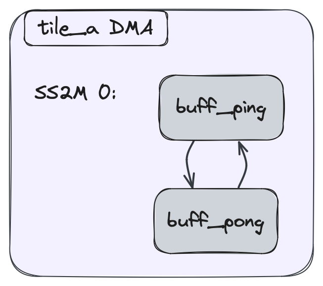

Section 2g - Data Movement Without ObjectFifos¶
- Section 2 - Data Movement (ObjectFifos)
- Section 2a - Introduction
- Section 2b - Key ObjectFifo Patterns
- Section 2c - Data Layout Transformations
- Section 2d - Runtime Data Movement
- Section 2e - Programming for multiple cores
- Section 2f - Practical Examples
- Section 2g - Data Movement Without ObjectFifos
- Section 2h - Advanced ObjectFifo + Cross-Tile Buffer
Not all data movement patterns fit cleanly into ObjectFifos. This advanced section goes into detail about how to express data movement directly in terms of the underlying hardware pieces: per-tile Direct Memory Access (DMA) channels, buffer descriptors, hardware locks, and the AXI-stream routes between them. To better understand the code and concepts here, it is recommended to first read the Advanced Topic of Section 2a on DMAs.
IRON exposes the same surface in two tiers — both fully supported,
both lower into the same aie.flow / aie.lock / aie.mem /
aie.memtile_dma / aie.shim_dma ops:
- IRON Python primitives (the rest of this section). First-class
Python classes —
Flow,Lock,TileDma,DmaChannel,Bd,Acquire,Release— that compose into a regular@iron.jitdesign alongsideWorkerandRuntime. Use this tier when you want to hand-wire DMA programs but still get the@iron.jitlifecycle (content-addressed caching,iron.tensorhost I/O,aiecclowering). - AIE dialect Python (§Lowered-equivalent dialect
at the end). Raw
@mem/@memtile_dma/@shim_dma/aie.flow/aie.lockdecorators frompython/dialects/aie.py. Useful for pure-dialect lit tests and for the rare design that needs an op the IRON primitives don't expose yet.
Hardware background¶
The AIE architecture has three types of tiles — compute tiles, mem
tiles, and shim tiles (external memory interface). Each has its own
compute and memory characteristics, but the DMAs share a common
design. Each tile's DMA exposes some number of input (S2MM) and
output (MM2S) channels — compute and shim tiles have two of each;
mem tiles have six of each.
The data movement on each channel is described by a chain of buffer
descriptors (BDs). Each BD says which buffer is being moved and how
it synchronizes — locks acquired before the transfer starts and
released after it completes. BDs in a chain link to a next BD,
forming a loop that keeps streaming as long as the lock protocol
permits.
A flow connects two channels (or a channel to another endpoint kind) across the AXI stream switch fabric. Flows are direction-agnostic at the API level — the lowering reads direction off the source and destination tiles.
IRON Python: structural primitives¶
These classes live under aie.iron:
| Class | What it lowers to | Defined in |
|---|---|---|
Buffer(tile, type, initial_value=None, name) |
aie.buffer on the given tile |
python/iron/buffer.py |
Lock(tile, lock_id=None, init=0, name) |
aie.lock with explicit id + init count |
python/iron/lock.py |
Flow(src, dst, *, src_port=DMA, src_channel, dst_port=DMA, dst_channel) |
aie.flow — one circuit-switched route |
python/iron/dataflow/flow.py |
PacketFlow(src, dsts: list[PacketDest], *, pkt_id, ...) |
aie.packetflow with explicit packet IDs |
same file |
TileDma(tile, channels=[DmaChannel(...)]) |
aie.mem (compute), aie.memtile_dma (memtile), or aie.shim_dma (shim) — picked by tile type |
python/iron/dataflow/tile_dma.py |
DmaChannel(direction, channel, bds=[Bd(...)]) |
One @dma(dir, ch) chain inside the TileDma's region |
same |
Bd(buffer, offset=0, length=None, acquires=[...], releases=[...], next="self"\|int\|None, packet=None) |
One BD block: acquires + aie.dma_bd + releases + aie.next_bd |
same |
Acquire(lock, value=1, greater_equal=True) |
aie.use_lock(..., AcquireGreaterEqual\|Acquire) at BD start |
same |
Release(lock, value=1) |
aie.use_lock(..., Release) at BD end |
same |
Bd.next mirrors the dialect's aie.next_bd chain wiring:
"self"(default) — loop back to this BD (the common "keep streaming" pattern).- an
inti— point at the i-th BD in thisDmaChannel'sbdslist (zero-based). Useful for explicit cycles in multi-BD chains. None— emit nonext_bd. Rarely useful; the basic block ends up without a terminator and the caller takes responsibility.
Bd.packet = (pkt_type, pkt_id) stamps a packet header on every
transfer this BD emits — pair it with a PacketFlow carrying the same
pkt_id so the routing fabric dispatches correctly.
Wiring everything into the Runtime¶
Three registrations on the Runtime object pull the structural
primitives into the resolved program. All three accept one object per
call:
rt = Runtime()
rt.add_flow(my_flow) # one call per Flow / PacketFlow
rt.add_lock(my_lock) # one call per Lock
rt.add_tile_dma(my_dma) # one call per TileDma program
Inside rt.sequence(...), if even the BD-level abstraction is too
high — typically because you're driving BD writes from the host
runtime sequence rather than from the tile DMA program — drop into
raw npu_* ops (npu_writebd, npu_address_patch, npu_push_queue,
npu_sync, npu_write32) via:
def manual_bd_writes(a, b):
npu_write32(column=col, row=1, address=0xC0000, value=1)
npu_writebd(bd_id=0, buffer_length=..., column=col, row=0, ...)
npu_address_patch(...)
npu_push_queue(...)
npu_sync(column=col, row=0, ...)
with rt.sequence(in_ty, out_ty) as (a, b):
rt.start(worker)
rt.inline_ops(manual_bd_writes, [a, b])
rt.inline_ops(fn, [args]) calls fn(*args) inside the runtime
sequence's MLIR region with the host-side tensor handles already in
scope — exactly what rt.fill / rt.drain are built on top of, but
with no protocol assumptions baked in.
Worked example: tile-to-tile copy¶
The dialect example we will mirror has tile_a (compute) streaming
256 int32s to tile_b (compute) on tile_a's output channel 0 →
tile_b's input channel 1. In IRON Python:
import numpy as np
import aie.iron as iron
from aie.iron import (
Acquire, Bd, Buffer, DmaChannel, Flow, Lock, Release, TileDma,
Worker, Runtime, Program,
)
from aie.iron.device import Tile
from aie.dialects._aie_enum_gen import AIETileType, DMAChannelDir, WireBundle
tile_a = Tile(col=1, row=2, tile_type=AIETileType.CoreTile)
tile_b = Tile(col=1, row=3, tile_type=AIETileType.CoreTile)
vec_ty = np.ndarray[(256,), np.dtype[np.int32]]
prod_lock_a = Lock(tile=tile_a, lock_id=0, init=1, name="prod_a")
cons_lock_a = Lock(tile=tile_a, lock_id=1, init=0, name="cons_a")
buff_a = Buffer(tile=tile_a, type=vec_ty, name="buff_a")
prod_lock_b = Lock(tile=tile_b, lock_id=0, init=1, name="prod_b")
cons_lock_b = Lock(tile=tile_b, lock_id=1, init=0, name="cons_b")
buff_b = Buffer(tile=tile_b, type=vec_ty, name="buff_b")
# One AXI-stream route, source-to-destination, direction inferred.
a_to_b = Flow(
src=tile_a, dst=tile_b,
src_port=WireBundle.DMA, src_channel=0,
dst_port=WireBundle.DMA, dst_channel=1,
)
# Per-tile DMA programs. Each has one channel with one self-looping BD.
dma_a = TileDma(tile=tile_a, channels=[
DmaChannel(
direction=DMAChannelDir.MM2S, channel=0,
bds=[Bd(
buffer=buff_a,
acquires=[Acquire(cons_lock_a)], # wait for "data ready"
releases=[Release(prod_lock_a)], # signal "buffer free"
next="self",
)],
),
])
dma_b = TileDma(tile=tile_b, channels=[
DmaChannel(
direction=DMAChannelDir.S2MM, channel=1,
bds=[Bd(
buffer=buff_b,
acquires=[Acquire(prod_lock_b)], # wait for "buffer free"
releases=[Release(cons_lock_b)], # signal "data ready"
next="self",
)],
),
])
rt = Runtime()
for lk in (prod_lock_a, cons_lock_a, prod_lock_b, cons_lock_b):
rt.add_lock(lk)
rt.add_flow(a_to_b)
rt.add_tile_dma(dma_a)
rt.add_tile_dma(dma_b)
The locks follow AIE-ML semantics: each Lock starts at init, an
Acquire waits until the value is >= value (default 1) and
decrements it on success, Release increments by value (default 1).
With prod_a = 1 and cons_a = 0, tile_a's DMA blocks on
cons_lock_a until the compute core fills buff_a and releases it
— matching the protocol the dialect example expressed with
AcquireGreaterEqual / Release.
Multi-BD chains (ping-pong)¶
Extending the channel above to a ping-pong pair is two BDs with two
buffers, with next="self" on each so the BD repeats, plus a second
producer-lock token so both buffers can be in flight at once:
buff_ping = Buffer(tile=tile_a, type=vec_ty, name="buff_ping")
buff_pong = Buffer(tile=tile_a, type=vec_ty, name="buff_pong")
prod_lock = Lock(tile=tile_a, lock_id=0, init=2, name="prod_pp") # 2 tokens
cons_lock = Lock(tile=tile_a, lock_id=1, init=0, name="cons_pp")
ping_pong = TileDma(tile=tile_a, channels=[
DmaChannel(
direction=DMAChannelDir.S2MM, channel=0,
bds=[
Bd(buffer=buff_ping,
acquires=[Acquire(prod_lock)],
releases=[Release(cons_lock)],
next=1), # point at the next BD
Bd(buffer=buff_pong,
acquires=[Acquire(prod_lock)],
releases=[Release(cons_lock)],
next=0), # close the loop
],
),
])
Bd.next=1 points the first BD at the second; next=0 on the second
points back at the first. The pair behaves the same way as the
ObjectFifo lowering for a double-buffered fifo.

Canonical end-to-end demo¶
The runnable example for this whole surface is
programming_examples/basic/chaining_channels/chaining_channels.py
— an @iron.jit design that chains MemTile MM2S → shim DMA → compute
tile S2MM with:
- explicit
Buffer+Lockon each tile; - two
Flows (memtile → shim, shim → compute); - two
TileDmas with self-loopingBdchains and the acquire/release lock-protocol pairs; - a
Workerrunning a tiny lock-flipping spinner on the compute tile; - a runtime sequence that opens the data flow with
npu_writebd/npu_address_patch/npu_push_queue/npu_syncinside anrt.inline_ops(...)block — the teaching point of the example, because the manual BD writes are exactly whatrt.fill/rt.drainnormally hide.
That design is the right starting place when copying this pattern.
Lowered-equivalent dialect (AIE dialect Python)¶
The same hardware concepts are also exposed as raw decorators in the
aie dialect Python API
(python/dialects/aie.py). Reach
for them when you need an op the IRON primitives above don't surface,
or when writing pure-dialect lit tests that bypass the IRON runtime.
The three DMA region decorators pick by tile type:
@mem(tile) # compute tile DMA region
@memtile_dma(tile) # mem tile DMA region
@shim_dma(tile) # shim tile DMA region
A channel inside a region uses the unified dma constructor:
def dma(
channel_dir,
channel_index,
*,
num_blocks=1,
loop=None,
repeat_count=None,
sym_name=None,
loc=None,
ip=None,
)
The same tile_a → tile_b flow as the IRON example above, written at
the dialect level:
tile_a = tile(1, 2)
tile_b = tile(1, 3)
prod_lock_a = lock(tile_a, lock_id=0, init=1)
cons_lock_a = lock(tile_a, lock_id=1, init=0)
buff_a = buffer(tile=tile_a, datatype=np.ndarray[(256,), np.dtype[np.int32]])
prod_lock_b = lock(tile_b, lock_id=0, init=1)
cons_lock_b = lock(tile_b, lock_id=1, init=0)
buff_b = buffer(tile=tile_b, datatype=np.ndarray[(256,), np.dtype[np.int32]])
aie.flow(tile_a, WireBundle.DMA, 0, tile_b, WireBundle.DMA, 1)
@mem(tile_a)
def mem_body():
@dma(MM2S, 0)
def dma_out_0():
use_lock(cons_lock_a, AcquireGreaterEqual)
dma_bd(buff_a)
use_lock(prod_lock_a, Release)
@mem(tile_b)
def mem_body():
@dma(S2MM, 1)
def dma_in_1():
use_lock(prod_lock_b, AcquireGreaterEqual)
dma_bd(buff_b)
use_lock(cons_lock_b, Release)
Extending a channel's BD chain at the dialect level uses
@another_bd(prev_bd) (the IRON-Python equivalent is just appending
to DmaChannel.bds=[...]):
@mem(tile_a)
def mem_body():
@dma(S2MM, 0, num_blocks=2)
def dma_in_0():
use_lock(prod_lock, AcquireGreaterEqual)
dma_bd(buff_ping)
use_lock(cons_lock, Release)
@another_bd(dma_in_0)
def dma_in_1():
use_lock(prod_lock, AcquireGreaterEqual)
dma_bd(buff_pong)
use_lock(cons_lock, Release)
NOTE: This DMA configuration is equivalent to what the Object FIFO lowering looks like for double buffers.
flow(source, source_bundle, source_channel, dest, dest_bundle, dest_channel)
takes both tiles + their WireBundle (typically WireBundle.DMA) +
channel indices; the lowering infers direction from source vs
dest.
Manual stream routing (switchbox / connect)¶
Almost always, Flow (IRON) or flow (dialect) is the right tool: you
name the two endpoints and the --aie-create-pathfinder-flows pass
picks the switchbox connections in between. The rare exception is when
you need to pin the exact path — reproducing a specific hardware
configuration, or steering around a resource the router would otherwise
take.
There is no dedicated IRON class for this, and none is needed. A
switchbox region hangs off a tile and holds connect ops, each wiring
one input port to one output port of that tile's stream switch (a full
crossbar); a shim endpoint also needs a shim_mux translating its DMA
ports to the stream switch. Both are ordinary aie dialect ops, and
IRON already has a generic way to emit device-level ops: any object with
tiles() and resolve() (the Resolvable protocol) handed to a
Worker via fn_args is resolved at device scope, with its tiles
placed first. So a small user-side class emits the configuration with
no new API:
from aie.dialects.aie import switchbox, connect, EndOp
from aie.dialects._aie_enum_gen import WireBundle
class PinnedSwitchbox:
def __init__(self, tile, conns):
self._tile, self._conns = tile, conns
def tiles(self): # placed before resolve()
return [self._tile]
def resolve(self, loc=None, ip=None):
@switchbox(self._tile.op)
def _sb():
for sb, sc, db, dc in self._conns:
connect(sb, sc, db, dc)
EndOp() # aie.switchbox needs an explicit terminator
# pin one hop; hand it to a Worker in fn_args (the core_fn ignores it):
sb = PinnedSwitchbox(compute_tile, [(WireBundle.South, 1, WireBundle.DMA, 0)])
worker = Worker(core_fn, [..., sb], tile=compute_tile)
connect takes (source_bundle, source_channel, dest_bundle,
dest_channel), and a single switchbox may hold as many connect ops
as the hardware has ports.
Two things to know before reaching for this:
-
The ports must match what the router would pick. A hand-written connection only carries data if its source/destination ports (and the matching DMA channels) line up with the rest of the path. The reliable way to get them right is to build the equivalent
Flow/ObjectFifodesign first and dump the connections the pass generates (aie-opt --aie-place-tiles --aie-objectFifo-stateful-transform --aie-create-pathfinder-flows), then reproduce those exact ports. -
Manual and automatic routing don't share a hop. If a pinned
connectcompetes with aflowthe pathfinder is also trying to route through the same ports, routing fails ("Unable to find a legal routing"). Pin connections on a disjoint segment (the pathfinder augments the rest of that tile's switchbox around them), or pin the whole path and use noflowat all.
A complete, hardware-verified example that pins every hop of a
shim → compute → shim passthrough by hand lives in
programming_examples/basic/manual_switchbox.
MLIR ↔ C kernel ABI¶
External kernels are bound through
external_func / ExternalFunction, which
hides the calling convention. At the dialect tier the binding is a
func.func whose argument types follow the MLIR
bare-pointer calling convention
— a memref becomes a plain C pointer (no descriptor struct), and C++
name mangling is not applied, so the C function must be extern "C" or
a plain C symbol:
| MLIR type | C type |
|---|---|
i32 |
int32_t |
f32 |
float |
memref |
C pointer |
index |
int64_t |
The dialect tier is what @iron.jit ultimately lowers into. For
designs you intend to ship as part of the IRON examples, prefer the
IRON Python primitives at the top of this page — they give you the
caching, host-side tensor surface, and --emit-mlir introspection
for free.